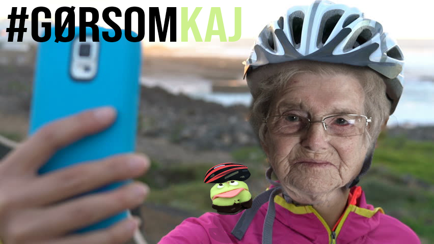

Alt for mange ældre mennesker kommer enten til skade, eller mister livet i cykeluheld.
I langt de fleste af tilfældene, ville man dog også selv kunne have gjort en forskel, for at formindske skaderne, eller endda overleve.
Cykelhjelmen gør meget for at mindske skaderne i en ulykke, og en overvejelse for en unisex-cykel, som har en lavere indstigning, end en forholdvis dame og herre cykel.
Som led i vores nye kampagne “Pas på dig selv, som du vil passe på dine kære” har vi oprettet et hashtag, hvor vi udfordrer DIG til at dele et billede af dig selv med sikkerhedsudstyr, og muligvis i selskab af en Kaj-kage. Samtidig kan du være med i en præmielodtrækning om en lækker unisex-cykel.
Pas på dig selv, som du passer på dine kære
Kampagne video
Andres erfaringer
I August måned 2014, kom jeg ud for en venstre svings ulykke. Jeg fik at vide at hvis, jeg ikke havde haft cykelhjelm på. Ville jeg nok ikke være her mere. Men hjelmen beskyttede mig, og jeg slap med en mindre hjernerystelse.
- Merethe, 83 år
Sommeren 2018, kom jeg ud for en for en ulykke. Jeg havde meget fart på ned ad en bakke, mine bremsere var ikke stærke nok, og jeg nåede ikke at stoppe inden det skiftede til rødt. En bil kom kørende fra højre side, og ramte ind i mig. Jeg var indlagt i 4 uger, og har nu en varig hjerneskade, som jeg ville have undgået hvis, jeg havde haft cykelhjelm på.
- Vagn, 71 år